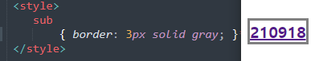

display속성은 요소를 블록과 인라인 요소 중 어느 쪽으로 처리할지 정의함

display속성
display속성은 요소를 블록과 인라인 요소 중 어느 쪽으로 처리할지 정의함
| 속성 값 | 처리 값 |
|---|---|
| inline | 인라인으로 처리 |
| block | 블록 레벨로 처리 |
| inline-block | 인라인으로 배치하되, 블록 레벨 요소의 속성을 추가할수 있도록 처리 |
| none | 디스플레이(표시)하지 않음 |
border 속성
border속성을 사용하면 요소가 차지하고 있는 영역에 테두리를
그릴수 있음. border속성에는 속성값으로 테두리의 두께, 모양, 크기 등을
함께 지정할 수 있음, 이러한 속성을'단축속성' 이라고 함
Ex

=두께가 3px인 직선모양(solid)의 회색(gray)테두리를 만든것
| 속성명 | 속성값 |
|---|---|
| dorder-color | color정의 방식과 동일 |
| border-width | thin, mediun, thick 등의 키워도 또는 px,em,rem 등의 단위 |
| border-style | none(기본값), solid(직선), dotted(점선), deshed(긴 점선) 등등 |